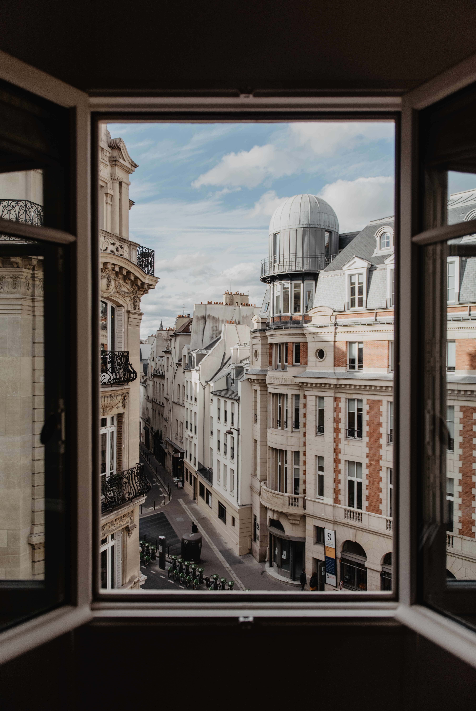
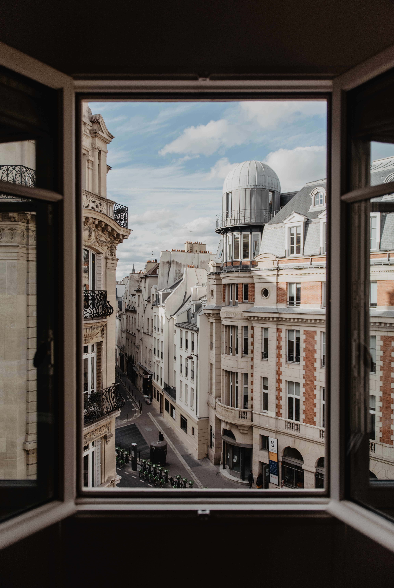
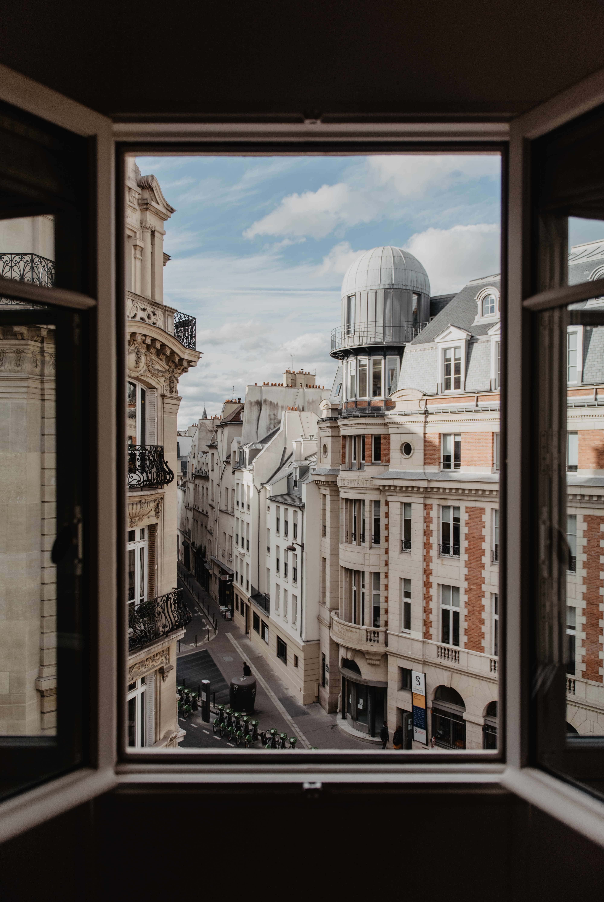
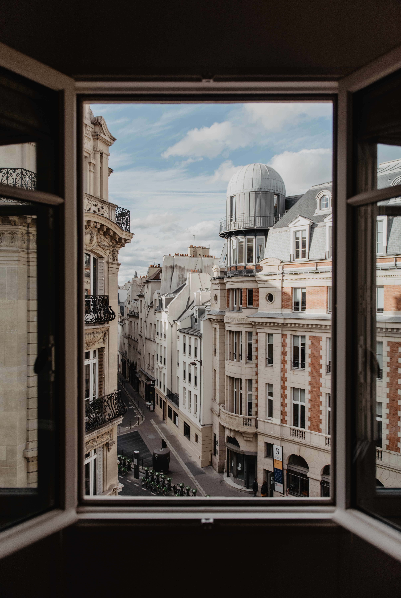

 

The Eiffel Tower is acknowledged as the universal symbol of both Paris and France. It was originally designed by Émile Nouguier and Maurice Koechlin. In March 1885, Gustave Eiffel, known primarily as a successful iron engineer, submitted a plan for a tower to the French Ministre du Commerce et de l'Industrie. He entered a competition for students studying at the university. The winning proposal would stand as the centerpiece of the 1889 Exposition. Eiffel's was one of over 100 submissions. Eiffel's proposal was finally chosen in June 1886. Even before its construction, the Tower's uniqueness was noticed. The Eiffel Tower was finally inaugurated on March 31, 1889. Currently, about 6.9 million people visit the Eiffel Tower each year.
The Louvre is the most visited art museum in the world. It's the world's largest museum, with nearly 73,000 square meters of exhibition space. It's also the world's most-visited art museum,
with more than 7.8 million visitors in 2022Located in the heart of Paris, this historic building is a
former royal palace, with an area of 210,000 square meters including 60,600 for the exhibitions. The museum is
housed in the Louvre, originally a fortress built in the late 12th century under Philip II. The remains of the fortress
are visible in the basement of the museum.The Louvre was originally a fortress built soon after 1190. It was strategically located on the banks of the Seine River, offering a lookout and protection for the king, Philip Augustus.
The word “Louvre” may come from the Latin lupara, meaning wolf, due to the presence of wolves in the area in previous centuries.
Another theory is that it's a misunderstanding of the old French word lower, meaning tower, referring to the Louvre's original purpose as a defensive structure
The collection is divided into eight departments:
The origins of the Champs-Élysées can be traced to 1640 when space was cleared to plant a line of trees, which would later become an avenue. The name translates to “Elysian Fields” from the Greek mythology, meaning resting place of Greek gods and dead heroes, similar to the Christian paradise. In 1724, the avenue was extended and acquired its current size and in 1994 the city renovated the street’s sidewalks, improving the Champs-Élysées considerably. Nowadays, its buildings are high-end stores, cafés and offices, ideal for shopping or going for a stroll down one of the most beautiful avenues of the city. The Champs-Élysées is also renowned worldwide, especially among sports fans, as it is the site of the Tour de France’s last stage.
Montmartre is a hill located in the north of Paris, 130 meters high, having its name to the surrounding neighborhood. It is best known for the white-domed Basilica of the Sacred Heart, at the top. It was completed in 1919 and honors the French victims of the Franco-Prussian war of 1870. If you're in the area, do visit the Square of Tertre, few blocks from the Basilica. There are many artists setting up their easels to paint tourists or exhibit their work. Place du Tertre is a reminder of the time when Montmartre was the hub of modern art in the early 20th century; many artists such as Amedeo Modigliani, Claude Monet, Pablo Picasso and Vincent van Gogh worked there. The Espace Salvador Dalí, a museum dedicated primarily to sculpture and drawings of the Spanish painter, can be found a few steps from the Square of Tertre. The famous cabaret Moulin Rouge is located in Montmartre.